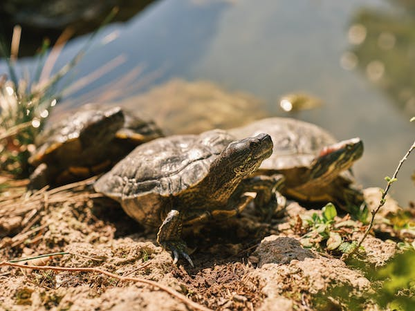

All visitors to Bentota enjoy visiting the Bentota Turtle Hatchery Project. The picturesque golden sands that entice you to our island also provide numerous endangered turtle species, such the Olive Ridley and Leatherback turtles, an alluring breeding site. The project's objective is to preserve and safeguard the eggs against predators and other threats. To find out more about these beautiful and endangered marine creatures, go to the turtle hatchery in Bentota.
Visitor Experience
Visitors may see how turtle eggs are incubated and how turtle hatchlings are born. The project personnel will outline the many phases of development as well as the steps taken to assure the hatchlings' safety and survival.
Research and Release
You could have the chance to take part in or witness the release of young turtles into the ocean depending on the date of your visit. This is a memorable and important occasion since it helps to conserve these vulnerable animals.
locations
It consists of a couple of turtle hatcheries